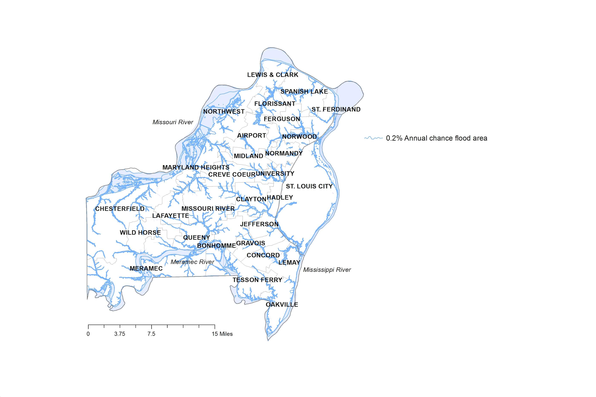
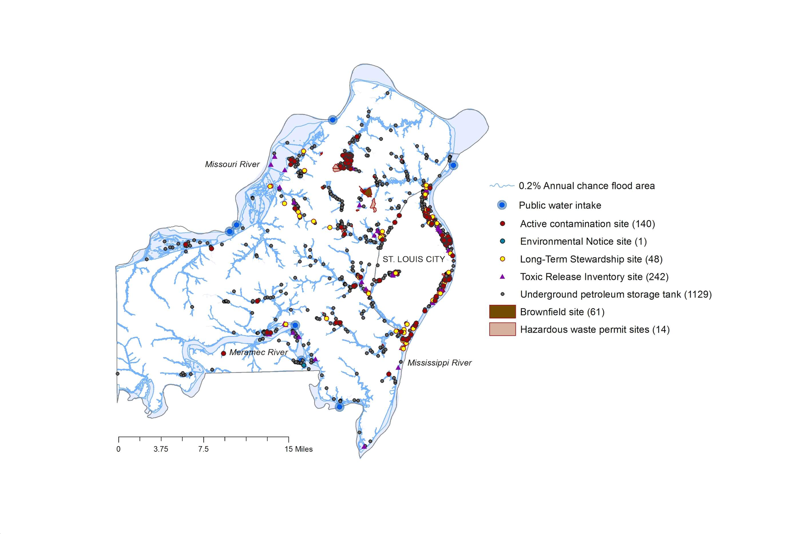
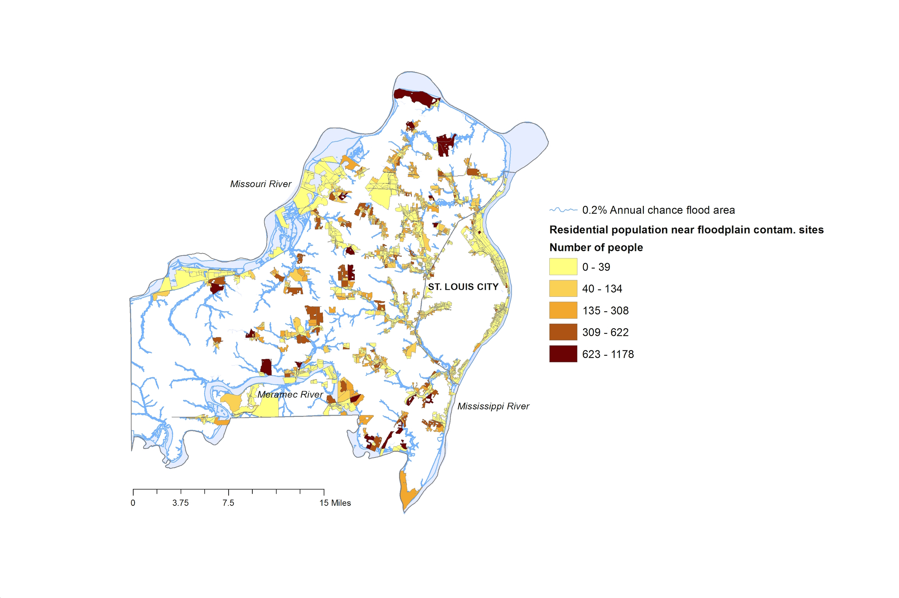
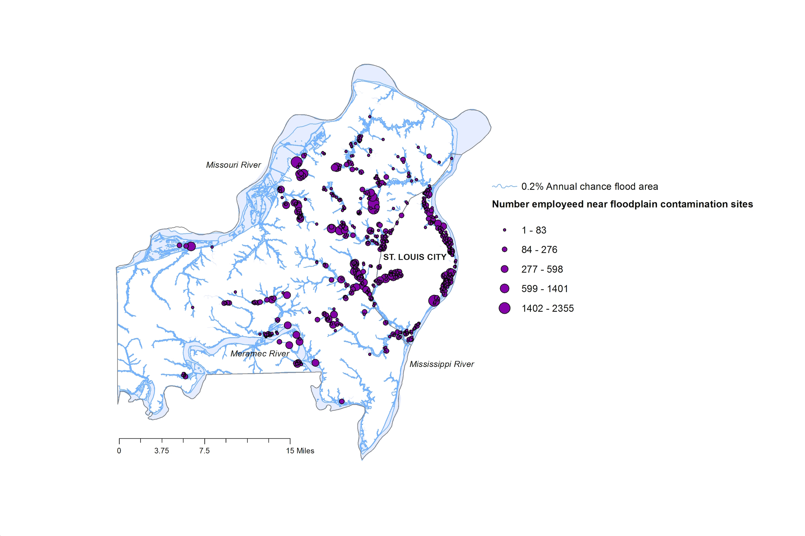
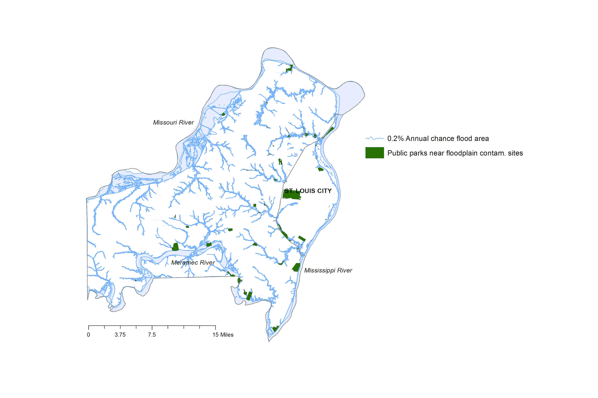

Climate change, flooding and contamination in the River City
St. Louis, or ''The River City,'' and its surrounding counties have one of the richest histories in all of North America, in large part due to the resources provided by the major river systems that come together in this area. However, the same waterways upon which St. Louis is built also cause semi-regular catastrophic flooding events, and climate models predict that the intensity and frequency of these extreme floods will increase over the next 50-100 years. Moreover, St. Louis has a legacy of being one of the most heavily contaminated urban areas in the country. The region is host to hundreds of millions of pounds of chemical, heavy metal, and radioactive waste from industrial activity. More frequent flooding and other extreme weather events will likely increase exposure risks to the people of St. Louis and have negative impacts on public health.
Mission
Our objective is to provide maps that will help St. Louis residents understand where the greatest potential risks of exposure are in the case of future flooding events. Our maps highlight the number of St. Louisans that live and work near contamination sites within the floodplain, and we have identified public parks that have high likelihood of becoming contaminated. Our hope is that these maps will also help government and land managers prioritize clean-up of the most heavily contaminated and populated areas within the flood plain so that exposure risks to the people of St. Louis can be minimized.
Maps
Municipalities in the St. Louis Metropolitan Area

The floodplain depicted here in blue represents the 0.2% Annual Chance Flood Hazard Area, which is commonly referred to as the 500-year floodplain. These types of extreme floods are expected to occur more frequently under climate change. Further information about the flood hazard areas can be found at the FEMA website under the Data tab.
Maps
Potential Sites of Floodplain Contamination

Recognized sources of actual or potential exposure to chemical, radioactive, or petroleum contaminants in the St. Louis Metropolitan Area that are within 0.1 miles of the 500-year flood zone (depicted in blue). In total, 1635 contaminated sites are directly in or right next to the floodplain. Descriptions of site designations and specific toxins are provided by the MO DNR and the EPA (see data tab).
Maps
Areas with Highest Exposure Risks to Residents

Density of St. Louis area residents that are living within 0.1 mile of identified areas containing toxic materials within the 500-year flood zone (depicted in blue). According to the 2010 census data, more than 138,000 people will face higher exposure risks to these toxins with the increasing frequency of floods expected by climate change.
Maps
Areas with Highest Exposure Risks to Workers

Where St. Louisans work also puts them at risk for increasing exposure to toxins during flooding events. This map shows employment density across St. Louis City and County near contaminated sites within the 500-year floodplain, which is shown in blue. Results from this study show that nearly 73,000 people work within 0.1 mile of toxic sites in the floodplain.
Maps
Exposure Risk in Public Parks

St. Louis boasts a large number of parks, but many of these parks are near contaminated sites in low-lying areas. In total, 1 in 5 parks in the greater St. Louis area sits next to a designated contamination site within the floodplain. The safety of recreational use by St. Louis residents -- particularly children -- in these public parks deserves further study.
Data and Methods
Flood hazard areas
The floodplain area for St. Louis City and County was determined using the most recent 0.2% chance (500-year) FEMA flood hazard data layers, which were updated in 2015.
https://msc.fema.gov/portal
Chemical and radioactive contamination and potential petroleum leak sites
Locations of Superfund sites, Brownfield sites, Environmental Notice sites, Long-Term Stewardship sites, and underground petroleum storage tanks were provided by the Missouri Department of Natural Resources.
www.dnr.mo.gov/molts http://dnr.mo.gov/env/hwp/downloads/hwpet.html
Employment density
Data on employment density were obtained from a 2013 Work Area Profile Analysis using the census.gov resource OnTheMap.
http://onthemap.ces.census.gov/